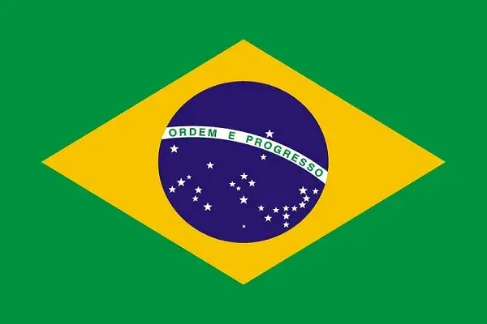

About Me

My name is Patricia. I am Brazilian, 29 years old, a student at BYU, and a member of The Church of Jesus Christ of Latter-day Saints. I love ice cream and I’m a big fan of Harry Potter.
Brazil
Brazil is the largest country in South America, with a population of approximately 213 million people and an area of 8,515,767 km². Its capital is Brasília, and the official language is Portuguese. The country has a tropical climate and diverse geography, including the Amazon Rainforest, the Pantanal, and an extensive coastline along the Atlantic Ocean. Brazil is famous for its rich culture, with highlights including samba, bossa nova, carnival, and typical cuisine such as feijoada and brigadeiro. The government is a presidential republic, and the official currency is the real (BRL).